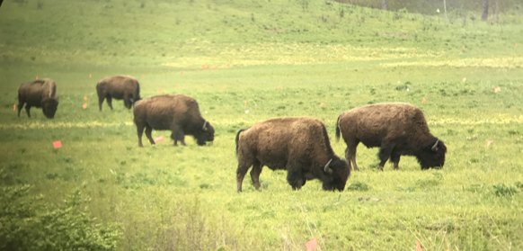
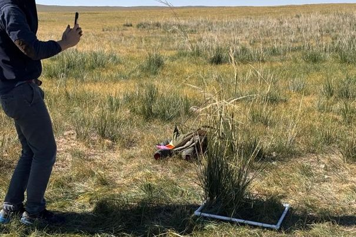
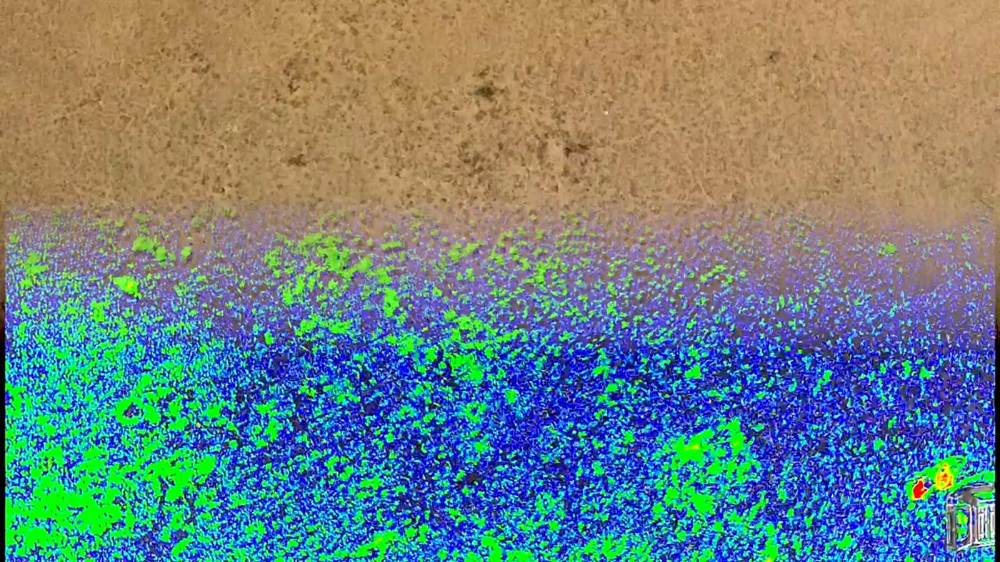
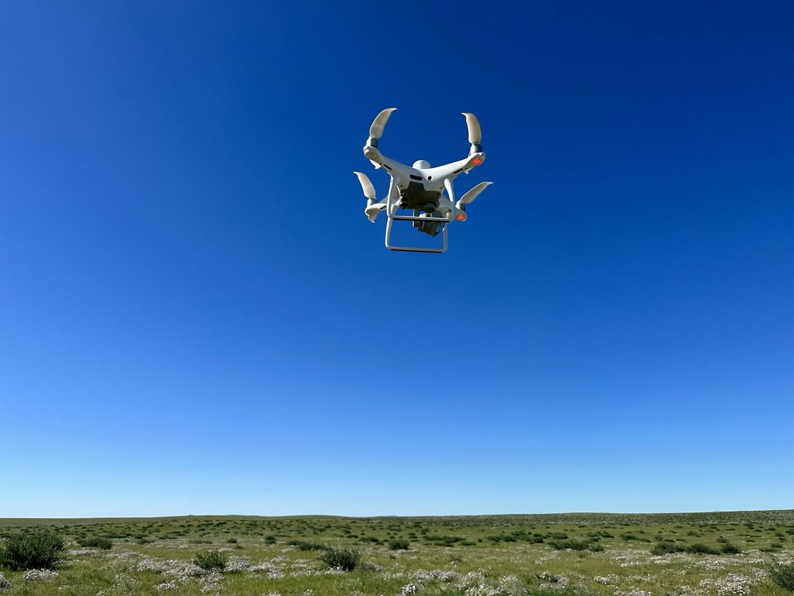
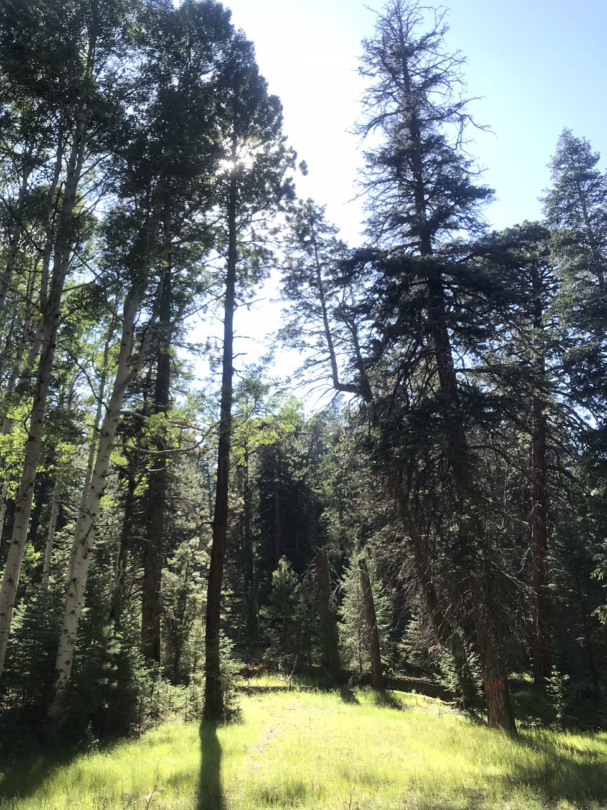
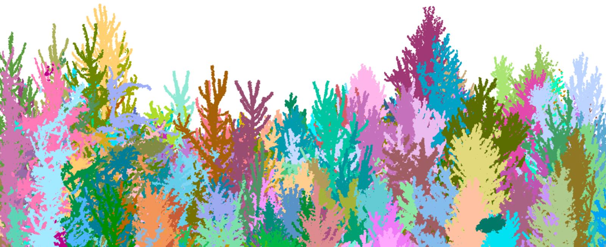
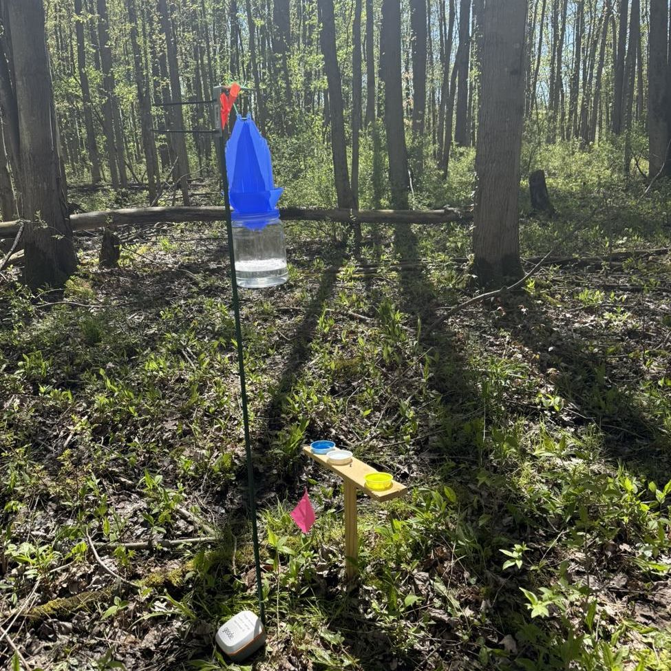

Research
Grasslands and forests
I work in two kinds of systems, and in both I ask the same two questions. The publications have the full details.
- Q1 · Disturbance & communitiesHow do disturbance, land use, and vegetation structure interact to shape ecological communities?
- Q2 · Model transferabilityCan the places where predictive models break down reveal where and how communities reorganize under no-analog conditions?
Nachusa Grasslands, IL · northern Arizona · central Mongolia · grassland sites across the U.S.
Grazing, fire, drought, and human land-use decisions continually reshape grassland communities, which makes grasslands a place to watch community assembly as it happens: which species disturbance filters in or out, how restoration history leaves a lasting imprint on a community, and whether the models built to track these changes still hold when conditions move beyond what we have observed.

Bison and fire in restored prairie
At Nachusa Grasslands, reintroduced bison shift their diets through the season, and grazed restorations become more variable in plant composition. Management shaped prairie animal communities more strongly than plant diversity did.
Q1 · Disturbance & communities
Handheld and iPhone lidar for herbaceous biomass
Low-cost handheld lidar, including the sensor in an iPhone, can measure herbaceous biomass accurately. We are modeling biomass across grasslands in the U.S. and Mongolia and tracking how uncertainty carries from plot to landscape.
Q2 · Model transferability
When models meet drought
Drone models of plant communities built under normal rainfall became biased on drought plots in northern Arizona, where communities had shifted from grasses to forbs. The model failure tracked the community change.
Q2 · Model transferability
From plots to satellites in Mongolia
A two-step approach links field plots to drones and drones to satellites across the central Mongolian steppe, where climate and herding shape vegetation. Mapping where each model applies matters as much as its accuracy.
Q2 · Model transferabilityQ1 · Disturbance & communitiesArizona & New Mexico · New York · northern India
Fire exclusion, logging, degradation, and invasive species change how vegetation fills the space beneath the canopy. The habitat heterogeneity hypothesis predicts that structurally complex forests support more diverse communities, and disturbance is what builds or erases that complexity. I measure how forest structure differs across disturbance and management histories and ask how those differences shape the communities and ecological processes that depend on them.

Subcanopy structure and spotted owls
A century of fire exclusion and logging has made Southwest forests dense and uniform. With the U.S. Fish and Wildlife Service, I found that subcanopy conditions, which canopy cover misses, may be key to where Mexican spotted owls nest.
Q1 · Disturbance & communities
Better lidar measures of structure
Voxel-based metrics describe how vegetation fills the canopy and improve airborne estimates of forest structure across Arizona and New Mexico. Related work compares airborne, terrestrial, and mobile lidar.
Q2 · Model transferability
Forest structure and pollinators
Around apple orchards in New York and northern India, we pair pollinator surveys with mobile lidar. Open, heterogeneous subcanopies support more pollinators, a pattern at odds with the filling-in of many eastern forests.
Q1 · Disturbance & communitiesQ2 · Model transferability
Next directions
Where the work is going
Scaling forest structure and pollinators
Mapping changing forest structure across New York and northern India with mobile lidar and spaceborne sensors such as NISAR.
Grazing, fire, and restored grasslands
More than a decade after bison returned to Nachusa, mapping biomass and structure across restorations and pairing those maps with pollinator surveys.
How general are structure–community links?
Common protocols across grassland and forest sites to learn which effects of openness and heterogeneity generalize.
Publications
Papers, chapters, and manuscripts
Titles link to a Google Scholar search for the paper.
Mentees
The people I've worked with
I started in ecology as a restoration technician, and I mentor the way I learned: start with defined, hands-on work, then take on more of the research process as skills grow.
Start hands-on
New mentees begin with real field and analysis tasks that have clear goals.
Build ownership
Each person takes on a defined question and carries it from methods to results.
Share the work
Mentees present and publish what they find, and several have gone on to Ph.D. programs and careers in spatial ecology.